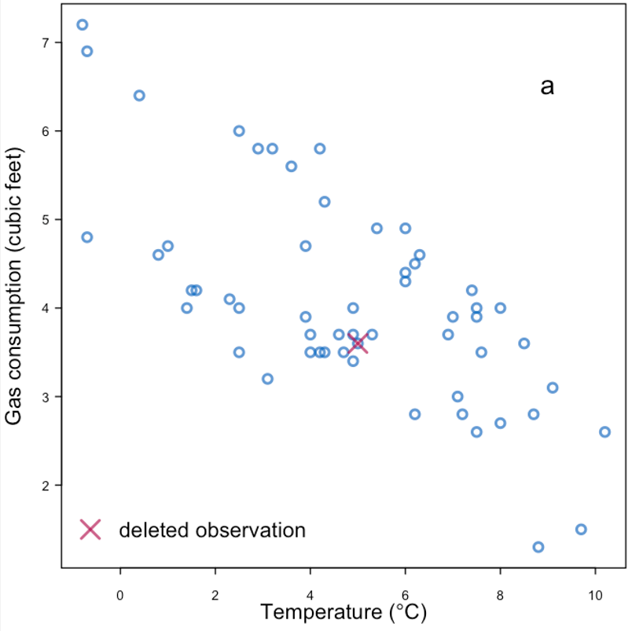
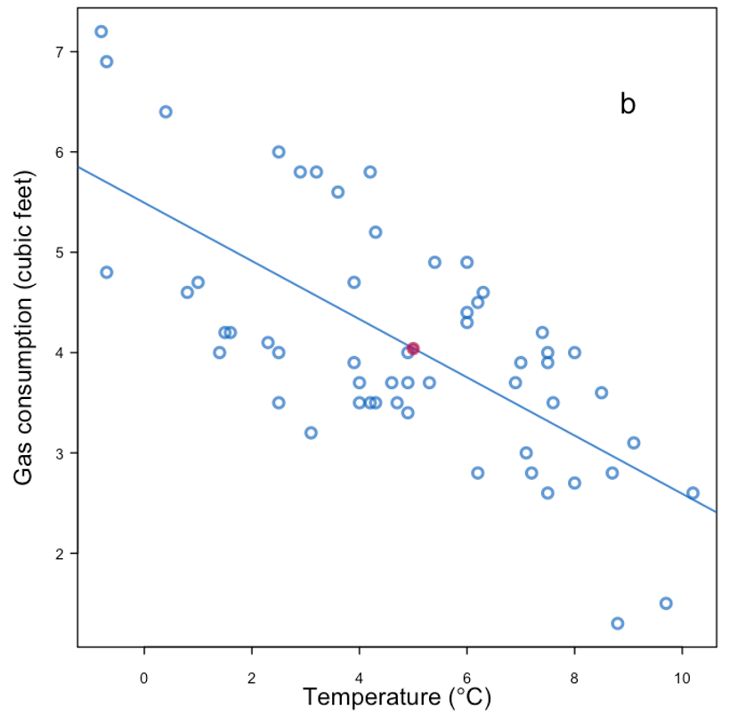
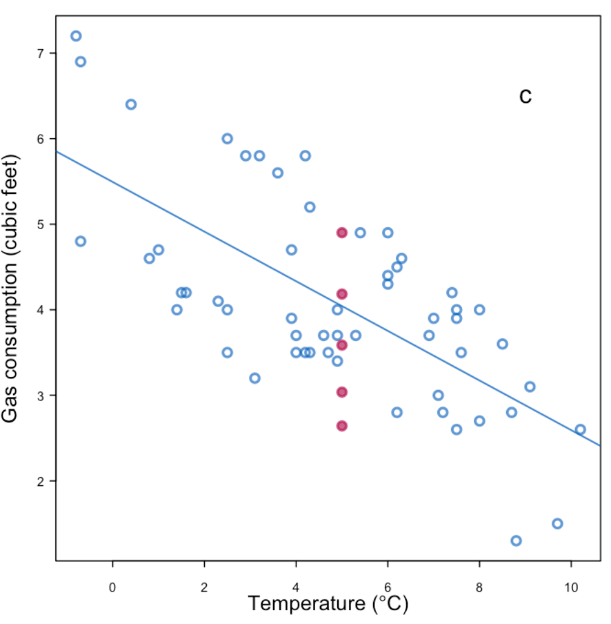
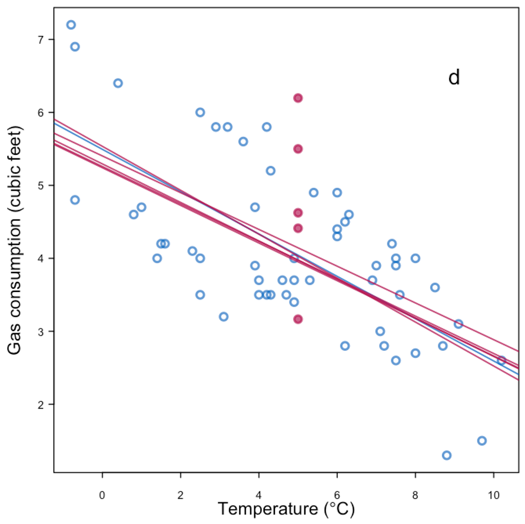
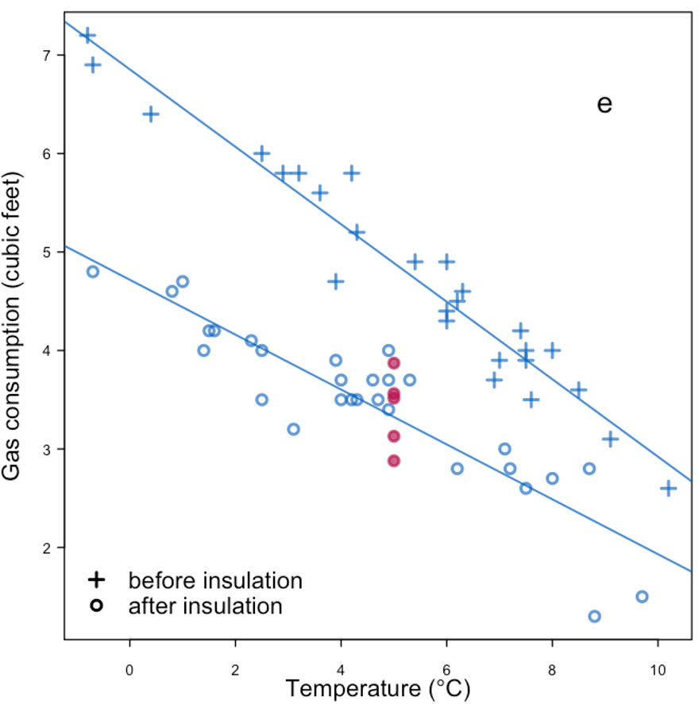
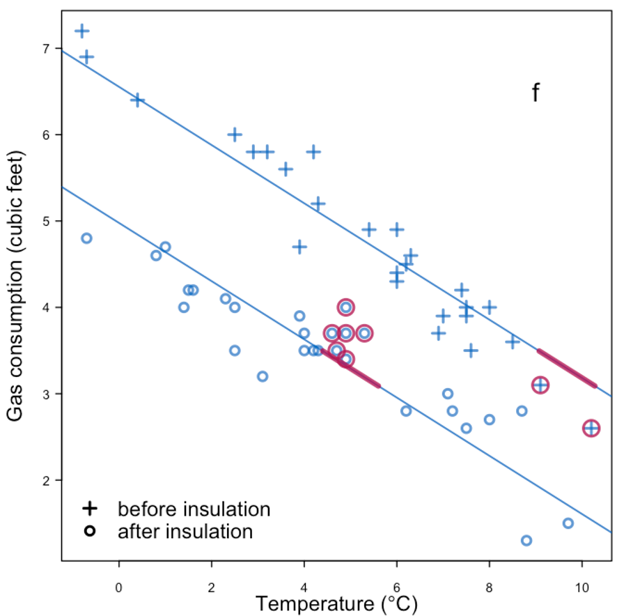

import pandas as pd
import seaborn as sns
import matplotlib.pyplot as plt
pd.set_option('display.precision', 3)
titanic = sns.load_dataset('titanic', cache=True, data_home='datasets/')Handling missing data
This document (briefly) introduces the concept, categorization, and treatment of missing data.
Classical categories of missing data
If we know how the missing data are generated, so-called missing data mechanisms, we can take into account why data are missing in data analysis.
A particularly useful (and wide-known) framework for missingness categorizes missingness into the following three categories (Little and Rudin, 2019):
Caveat… the category namings are… confusing
MCAR (missing completely at random): how data are missing is independent with any aspect of the data
MAR (missing at random): how data are missing depends on observed quantities, so-called predictors, or independent variables - e.g., a person with certain characteristics (known) may not answer certain questions on a survey, imagine reporting salary for different socio-economic classes - e.g., for certain inputs, a simulation model may crash or produce nonsensical outputs
MNAR (missing not at random): how data are missing depends on the unobserved quantities - e.g., a pollutant sensor can only detect particles that are \(> 0.1\mu\mathrm{m}\)
- e.g., storm surges only occur in areas that get below the water level
Understanding the causes of missing data helps designing algorithms to handle missing data. However, in reality, we often do not know the causes, or multiple causes exist in producing a data set.
Cautionary note: Where the data are missing matters, i.e., is a response value missing, is a predictor value missing, or do we not know what our analysis questions are yet?
Treatment of missing data
Starting with an example of “completing the data”
|  |
| Replace with the mean | |
|---|---|
|  |
| Replace with the mean + noise | |
|---|---|
|  |
| Replace with the mean + noise + parameter uncertainty | |
|---|---|
|  |
| More information + replace with mean + noise | |
|---|---|
|  |
| Predictive mean matching | |
|---|---|
|  |
Example of missingness impacting analysis from Daniel et al. (2012), reproducing Figure 4 in the paper:
 |
|---|
| Effect of missingness mechanism on data analysis. |
General rules for treating missing data:
- Under MCAR, focusing on complete cases or employing imputation methods tend to be sufficient.
- Under MAR, some methods are valid choices:
- If the missingness is independent of the response conditional on the predictor, linear regression is still “valid”.
- Imputation methods tend to introduce biases, depending on the data analysis methods.
- Under MNAR, the missingness should be explicitly modeled.
- e.g., censored observations in survival analysis.
Imputation methods
We introduce a (limited) list of imputation methods in this section, using the titanic dataset as an example:
Identifying missingness
We have covered some basic ways how to identify missingness in the EDA module. Here is one other option with the help of missingno.
# !pip install missingno
# in case you need to install the package
titanic.info()import missingno as msno
# visualization of available/missing dataRemoving data
We have discussed that removing data is typically not ideal, but nothing stops us from doing that…
# retaining titanic dataset with complete data
titanic_agecomp =
titanic_agecomp.info()# comparing the correlation with / without missing data
# changes in correlation matrix with / without age missingness# one other possibility (that includes boolean)
# changes in correlation matrix with / without age missingnessSimple imputation with a constant
# !pip install scikit-learn
from sklearn.impute import SimpleImputertitanic_constant = titanic.copy()
# set constant, completing data
# visualize completed data
sns.histplot(titanic_constant['age'])titanic_median = titanic.copy()
# example with median, admitting only numeric columns
# visualize completed data
fig, ax = plt.subplots(1, 1)
sns.histplot(titanic_median['age'], binwidth=5, alpha=0.3, color='k', label='imputed w/ median')
sns.histplot(titanic['age'], binwidth=5, alpha=0.3, color='purple', label='unimputed')
ax.legend()Multiple imputation
Multiple imputation is a technique to generate multiple realizations of imputation values, often modeled by a probability distribution.
One method is the multiple imputation by chained equations, or MICE. miceforest uses LightBGM as its training algorithm for MICE.
# !pip install -U miceforest plotnineimport miceforest as mf
# miceforest requires a real matrix.
# For illustrative purposes, we only use the numerical columns.
# set up a kernel to produce `num_datasets` imputed datasets
num_datasets = 4
kernel = mf.ImputationKernel(
)# run the MICE algorithm# retrieve completed data
titanic_mf = kernel.complete_data# code for plotting mice completed dataset
def plot_hist(kernel, completed_titanic, original_titanic, num_plot):
num_datasets = kernel.num_datasets
num_plot = min(num_datasets, num_plot)
for k in range(num_plot): # 1, 2, 3, num_datasets
sns.histplot(completed_titanic(dataset=k)['age'], binwidth=5, stat='probability', color='k', label='imputed sample', alpha=0.3)
sns.histplot(original_titanic['age'], binwidth=5, stat='probability', color='purple', label='unimputed', alpha=0.2)
plt.title('{:d} realizations of imputed age'.format(num_plot))
plt.legend()
plt.tight_layout()
plt.show()# retrieving each imputed dataset (recall that M in MICE means multiple)# comparing the original and imputed dataset
fig, ax = plt.subplots(ncols=5)
for k, axi in enumerate(ax.flatten()):
if k < num_datasets:
sns.boxplot(titanic_mf(dataset=k)['age'], ax=axi)
else:
sns.boxplot(titanic['age'], ax=axi, color='purple')
plt.tight_layout()# Generate more datasets
# Visualize the result variable density/histogramPredictive mean matiching (MICE) [Last figure in the gas consumption example]
kernel_pmm = mf.ImputationKernel(
)\(k\) Nearest Neighbor
titanic_knn = titanic.select_dtypes('number').copy()
from sklearn.impute import KNNImputer
# set up imputing for KNN
titanic_knn_df =
# visualize completed data
fig, ax = plt.subplots(1, 1)
sns.histplot(titanic_knn_df['age'], binwidth=5, stat='probability', alpha=0.3, color='k', label='knn imputation')
sns.histplot(titanic['age'], binwidth=5, stat='probability', alpha=0.3, color='purple', label='unimputed')
ax.legend()(Exercise) Imputation of tips
Consider the taxis dataset from seaborn, practice the imputation methods on the tip column for the dataset subtaxi_missing, given below: 1. Complete the data using
i. mean simple imputation, ii. median simple imputation, iii. k-nearest neighbor, and iv. predictive mean matching. 2. Compute the root mean squared error for each imputation method (because you know the truth). Which one is the best in this case? 3. Examine the correlation matrix among the numerical columns. Which methods preserve the correlation among variables?
import seaborn as sns
taxi = sns.load_dataset('taxis')
taxi.info()
subtaxi = taxi.loc[:, ['passengers', 'distance', 'fare', 'tip', 'tolls', 'total']]import numpy as np
# create missingness
np.random.seed(42)
mask1 = subtaxi.total > 25
mask2 = np.random.rand(subtaxi.shape[0]) < 0.7
subtaxi_missing = subtaxi.copy()
subtaxi_missing.loc[mask1 & mask2, 'tip'] = np.nanmsno.matrix(subtaxi_missing.sort_values('total'))References
- Daniel, R. M., Kenward, M. G., Cousens, S. N., & De Stavola, B. L. (2012). Using causal diagrams to guide analysis in missing data problems. Statistical methods in medical research, 21(3), 243-256.
- Hastie, T., Mazumder, R., Lee, J. D., & Zadeh, R. (2015). Matrix completion and low-rank SVD via fast alternating least squares. The Journal of Machine Learning Research, 16(1), 3367-3402.
- Little, R. J., & Rubin, D. B. (2019). Statistical analysis with missing data. John Wiley & Sons.
- Van Buuren, S. (2012). Flexible imputation of missing data. Boca Raton, FL: CRC press.
Some useful additional resources
- Gary King: Analyzing Incomplete Political Science Data
- Zangerle, E., & Bauer, C. (2022). Evaluating recommender systems: survey and framework. ACM Computing Surveys, 55(8), 1-38.